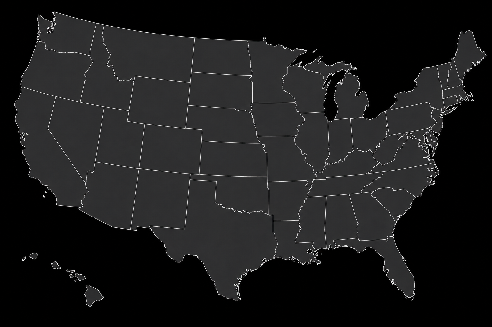
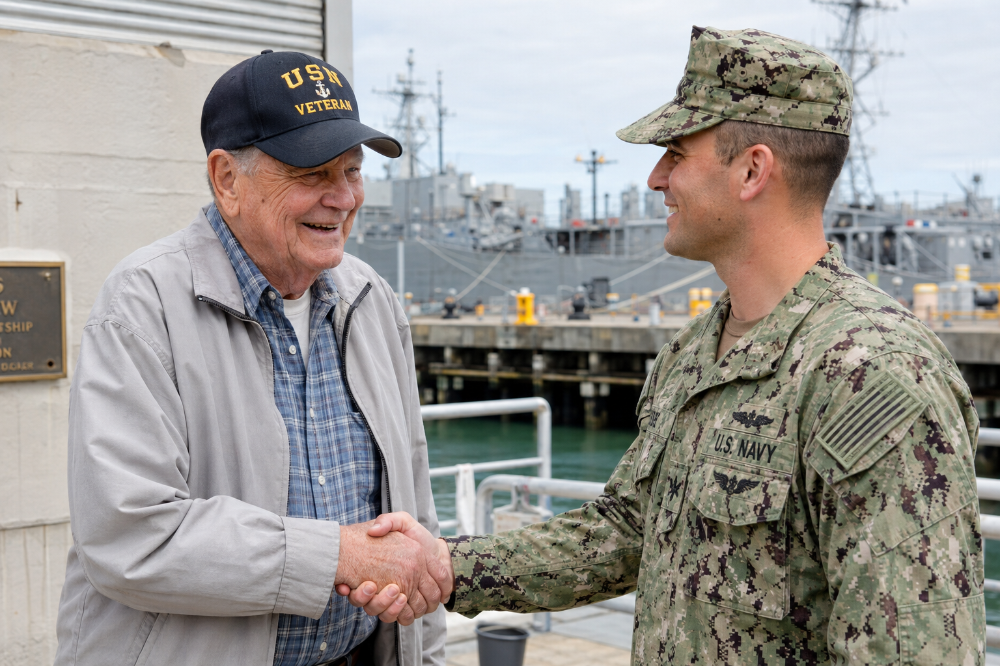
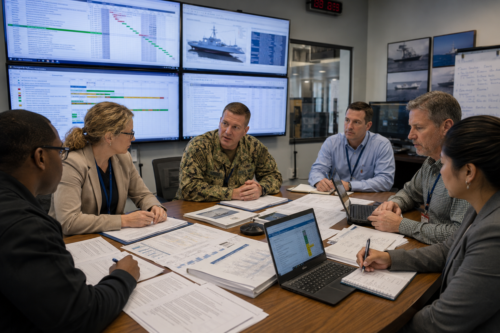

Range Engineering · Program Management · IT & Cybersecurity
Mission-Ready Engineering.
Proven Integrity.
IntegrITS delivers range engineering, program management, enterprise IT, and cybersecurity for the defense and commercial missions that cannot afford to get it wrong.
- Founded
- 0
- Veteran workforce
- 0
- Combined experience
- 0
is more than our name.
The name IntegrITS is drawn from the Latin integritas: soundness, uprightness, correctness, an unimpaired condition. It is not a slogan — it is how the company describes its own work.
In our name
A commitment to sound practices, professional conduct, and technical correctness.
In our character
Leadership and employees share responsibility for strong ethical standards, mutual respect, and accountability.
In our execution
Customers experience that integrity through the quality, continuity, and reliable execution of every product and service.
Ref B — Integrated Mission Support
Define. Engineer. Prepare. Execute. Protect. Analyze. Sustain.
Our customers rarely need only one discipline. IntegrITS supports the complete system life cycle, aligning technical specialists, program professionals, and enterprise technologists around mission outcomes.
- 01DefineRequirements, architecture, acquisition, planning
- 02EngineerSystems design, infrastructure, integration
- 03PrepareTest plans, readiness reviews, policy, training
- 04ExecuteMission support, test conduct, program operations
- 05ProtectCybersecurity, safety, risk, quality
- 06AnalyzeData collection, performance metrics, reporting
- 07SustainMaintenance, logistics, modernization, continuity
Ref C — Operational Footprint
Fielded where the mission is.
Select a marker to see the capability supported at that location. Hawaii is shown as an inset, bottom left.
United States — operational locations

Readout
San Diego, California
Corporate headquarters. NAVWAR and NIWC Pacific support, program management, C4I and tactical communications, contracts and corporate operations.
70%+
of IntegrITS staff have served in the U.S. military
Ref D — Veteran Workforce
Experience you cannot learn from a manual.
Our veterans bring operational awareness, accountability, teamwork, and discipline — a direct understanding of the customers and missions we support. IntegrITS combines that experience with more than 400 combined years of engineering and technical knowledge, kept current as test environments, acquisition requirements, and cybersecurity standards evolve.

Ref E — Leadership
Leadership shaped by the mission.
Each leader carries a personal integrity theme — a short answer to how their part of the company earns trust. Select a card for the full profile.
Ref F — Careers
Build a career around work that matters.
IntegrITS is built around experienced people who take pride in serving customers, solving difficult problems, and supporting missions with real operational impact. We believe people perform at their best when they have the capacity to invest in their families, communities, and well-being — without losing sight of the mission.
Contact Our Team
- Competitive salaries
- 401(k) with company match
- Educational Assistance Program
- Employee Assistance Program
Ref G — Contact & Credentials
Ready to support the next mission?
Whether the requirement calls for a specialized technical team, program-office support, enterprise technology expertise, or an integrated cross-functional solution — IntegrITS offers experienced personnel and flexible contracting paths.
Corporate headquarters
Integrits Corporation5205 Kearny Villa Way, Suite 200
San Diego, CA 92123
+1 858-300-1600 · Fax +1 858-300-1640
SeaPort‑NxG point of contact
Stephen C. Fox
President & Chief Operating Officer
Federal identifiers
- UEI
- QVMYLK59N3G2
- CAGE
- 1LVF2
- NAICS
- 541330 · 336611
- OASIS+
- 47QRCA25DS352
- SeaPort‑NxG
- All seven zones